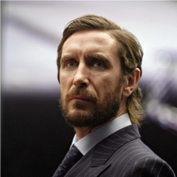

Portrayed by Paul McGann
|  | (born 14 November 1959) is an English actor who made his name on the BBC serial The Monocled Mutineer, in which he played the lead role. He is also known for his role in Withnail and I, and for portraying the Eighth Doctor in the 1996 Doctor Who television movie and subsequent tie-in media. |